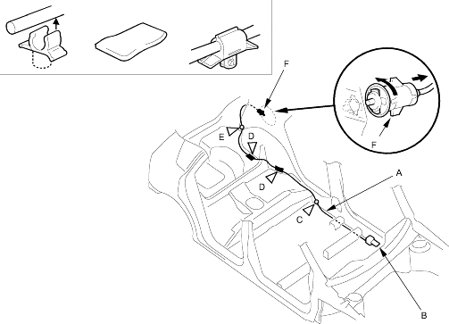

Openers
Fuel Fill Door Opener Cable Replacement
|
20-12 |
|
LHD
SRS components are located in this area. Review the SRS component locations (see page 23-24) and the precautions and procedures (see page 23-25) in the SRS section before performing repairs or service. Refer to the '01 Civic Shop Manual, P/N 62S5A00 on this CD.
NOTE:
- Put on gloves to protect your hands.
- Take care not to scratch the body and related parts.
- Remove these items from left side of the vehicle, refer to the '01 Civic Shop Manual, P/N 62S5A00 on this CD:
- Front door sill trim, right side (see page 20-206)
- Rear door sill trim, both sides (see page 20-206)
- Trunk side trim panel (see page 20-208)
- Pull the carpet and rear floor carpet back as necessary, refer to the '01 Civic Shop Manual, P/N 62S5A00 on this CD (see page 20-212).
- Disconnect the fuel fill door opener cable (A) from the opener (B), refer to the '01 Civic Shop Manual, P/N 62S5A00 on this CD (see step 3 on page 20-267).
Fastener Locations
C  : Clip, 1 D : Cushion E : Clip, 1
: Clip, 1 D : Cushion E : Clip, 1
tape, 5

- Remove the opener cable from the clip (C). Remove the cushion tape (D) and detach the clip (E) by using a clip remover.
- Remove the fuel fill door latch (F) from the body by turning it 90°.
- Remove the fuel fill door opener cable from the vehicle. Take care not to bend the cable.
- Install the opener cable in the reverse order of removal and replace the cushion tape and replace the clip if it damaged.